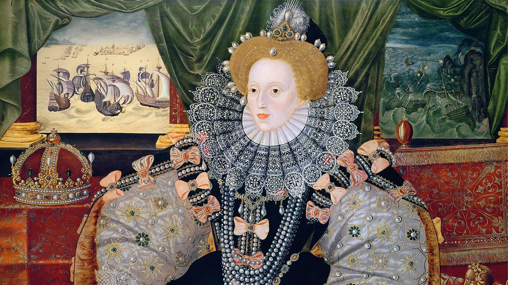

Queens Museum

Queens Museum

Queens Museum

The Queens Museum is a virtual exhibition that aims to recognize the extraordinary life of four of the most important women in english history. We decided to build this museum to honor four royal women that shape England through time. We chose a collection of items that represent the greatness of this four women thought their life and their impact in history and popular culture.
The first woman that we decided to honor is Queen Elizabeth I (1533-1603). She lived and reign England during the 16th century, she is consider one of the most important monarchs despite never getting married and the issues being a single woman and queen at the time. Her reign was consider the golden age of England during witch the english renaissance flourish, with courage and strength she rule for 45 years. Remembered as a song queen and one of the most influenced woman of the 16th century.
The next queen is Queen Victoria (1819-1901). She lived and reign during the 19th century The United Kingdom. During her reign England became an empire extended all around the globe, while the industrial revolution was a thriving inside the country. Alongside her devoted husband, Prince Albert she rule for almost al the century becoming a figure of stability not just for England but for all Europe, furthermore the 1800’s are remembered as the victorian age.
The following queen is Queen Elizabeth II (1926-2022). She is the last queen that England has had and she became the face of the modern monarchy, while inheriting the throne at a very young age she was able to perform her duties as queen in a very challenging world, in constant change and one that it belief that there was not need for monarchs. She reign for 70 years dealing with the challenges of the world in the 1900’s, bringing letting see the humanity behind the stoic figures of monarchs.
The last woman that we decided to honor on this museum is Lady Diana, Princess of Wales (1961-1997), even thou we know that she wasn’t a queen, she will always be the Peoples queen. And we wanted to honor Princess Diana the “Queen that never was”. Princess Diana became very fast the center of attention of the whole word by marring the heir to the English throne. During the 1980’s and 1990’s she was more that the princess of Wales, she became a fashion icon and is remembered for her kindness and sensibility to the one in need others, she is became the People’s Princess.
The exhibition is organized in four rooms, each one dedicated to one queen, therefore the items that represent each queen are organized by room. Here are the topics of our items.
We decide to propose a timeline so our visitor are contextualized with the lifespan of the items in the exhibition.
Queen Elizabeth I

Queen Victoria

Queen Elizabeth II

Lady Diana, Princess of Wales
Explore Our Mueseum through our Items.
The timeline is powered by Timeline.JS, a free visualization tool developed by Northwestern University's Knight Lab. For detailed information about the timeline's creation and functionality, please visit the Timeline.JS website.